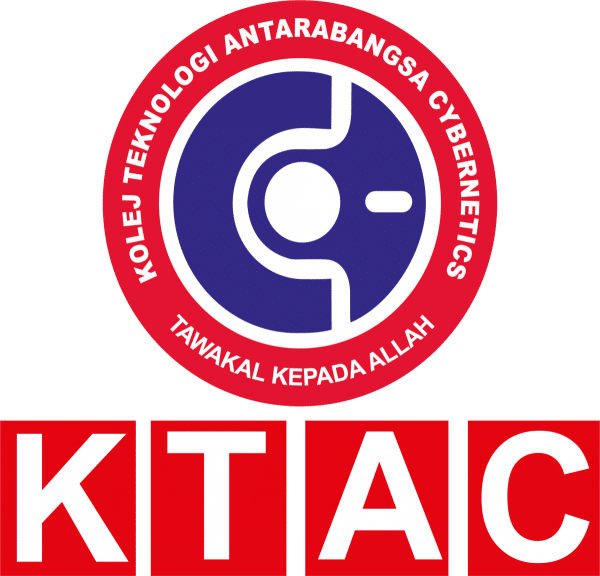

Valid from 1st January 2026 until 31st December 2026
Check course costs, payment periods and additional charges before applying from Bangladesh or another country. Select your program and campus, then read its fee headings and notes together.
Amounts retain their published labels. First-year payments, semester fees, tuition-only amounts and program totals may include different items. Scholarships and nationality-specific costs need confirmation for your intake.
Cybernetics (KTAC) QS World, Asia and Malaysia rankings · International student scholarship guide · Fee questions and answers
| No | Programme | Level | Duration | Year 1 (RM) | Year 2 (RM) | Year 3 (RM) | Total (RM) |
|---|---|---|---|---|---|---|---|
| 1 | Certificate in Creative Multimedia | Certificate | 1-2 Years | 13,100 | 8,750 | - | 21,850 |
| 2 | Certificate of Aviation Management | Certificate | 1-2 Years | 13,100 | 8,750 | - | 21,850 |
| 3 | Certificate of Business Management | Certificate | 1-2 Years | 13,100 | 8,750 | - | 21,850 |
| 4 | Diploma in Creative Multimedia | Diploma | 3 Years | 14,200 | 9,750 | 10,250 | 34,200 |
| 5 | Diploma in Aviation Management | Diploma | 3 Years | 14,200 | 9,750 | 10,250 | 34,200 |
| 6 | Diploma in Halal Industry Management | Diploma | 3 Years | 14,200 | 9,750 | 10,250 | 34,200 |
| 7 | Diploma in Accounting | Diploma | 3 Years | 14,200 | 9,750 | 10,250 | 34,200 |
| 8 | Diploma in Early Childhood Management | Diploma | 3 Years | 14,200 | 9,750 | 10,250 | 34,200 |
| 9 | Diploma in Business Management | Diploma | 3 Years | 14,200 | 9,750 | 10,250 | 34,200 |
| 10 | Diploma in Computer Science | Diploma | 3 Years | 14,200 | 9,750 | 10,250 | 34,200 |
| 11 | Diploma of Shariah | Diploma | 3 Years | 14,200 | 9,750 | 10,250 | 34,200 |
| 12 | Diploma in Hotel Management | Diploma | 3 Years | 14,200 | 9,750 | 10,250 | 34,200 |
Stored fee schedule for Cybernetics (KTAC); check the document's validity.
Find your program and campus in the fee chart on this page, then read the relevant student category, fee columns and remarks. Different programs and fee periods cannot be combined into one reliable tuition price. Amounts not shown need an intake-specific quotation.
Bangladeshi applicants should check the international-student rate for their program and intake. This page does not establish a separate Bangladesh-only tuition rate or guarantee eligibility for a discount. Check nationality-specific charges, deposits, visa costs and scholarship conditions in the schedule and your written offer.
Use the exact period printed in each column. A first-year payment, fee per semester and full-program total describe different costs. Where a semester or annual breakdown is absent, request a payment schedule; dividing a program total can give the wrong instalment amount.
The download links on this page open the stored fee documents. One-Step is a student guidance website. Confirm the document's edition, campus, student category and validity with the university before accepting an offer or paying. The university's current written fee schedule and offer determine the amount payable.
Use any effective dates and intake restrictions stated in the fee documents and course remarks. A single validity year has not been confirmed for every table on this page. A recent page update does not mean all underlying fees are for the current year.
Check any scholarship, adjusted tuition or discount columns alongside their conditions. A listed reduction is not an automatic award for every international or Bangladeshi applicant. Ask for the scholarship name, eligibility, application deadline, renewal conditions and final payable fee in writing.
Check the date and terms printed in each stored schedule. Confirm current rates with the university.